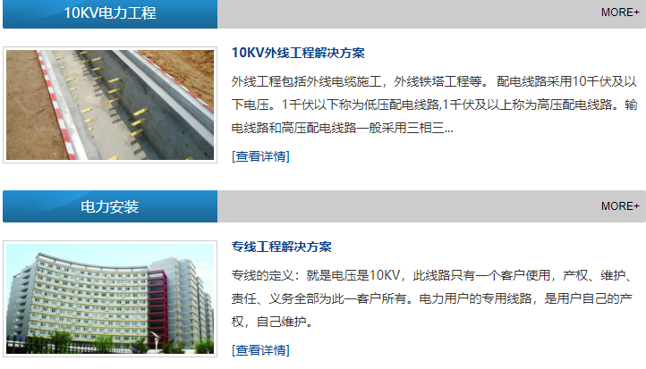
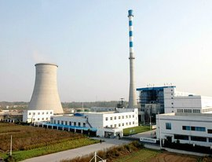
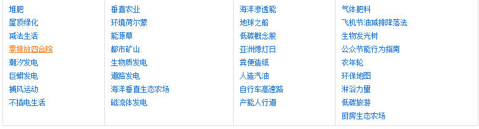

提供更有效的电力方案，同时为未来公司运营做好铺垫。
电能是当前社会最为重要的基础能源之一,人口数量增加,工业生产活动日益活跃化,电能供给工作压力增加,电力部门不仅需要在全社会范围内宣传节约用电的电力资源应用理念,同时还需对技术研发活动给予财政以及政策方面的支持,优化现有电力供给结构,开发更多的发电技术手段,既要供给充足的电能,同时还需保障生态稳定。生物质发电是一种科学的现代化发电手段,现探讨应用情况与未来使用前景。
国家发改委能源局可再生能源处周篁博士在河北省晋州生物质发电项目开工仪式上介绍说，生物质直接燃烧发电(简称生物质发电)是世界上仅次于风力发电的 可再生能源发电技术。据初步估算，在我国，仅农作物秸秆技术可开发量就有6亿吨，其中除部分用于农村炊事取暖等生活用能、满足养殖业、秸秆还田和造纸需要之外，我国每年废弃的农作物秸秆约有1亿吨，折合标准煤5000万吨。照此计算，预计到2020年，全国每年秸秆废弃量将达2亿吨以上，折合标准煤1亿吨相当于煤炭大省河南一年的产煤量。
\ 更多项目期待你的加入